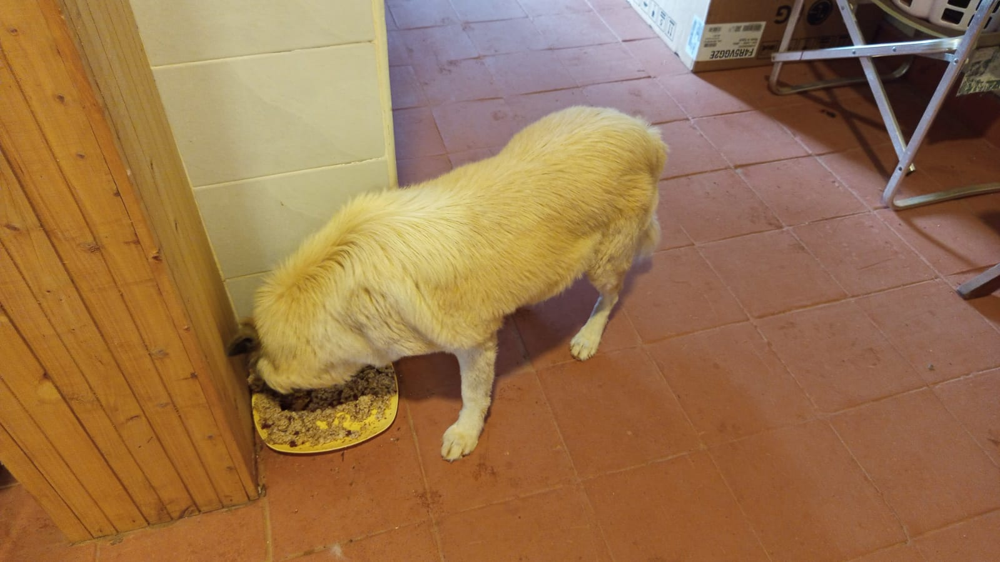
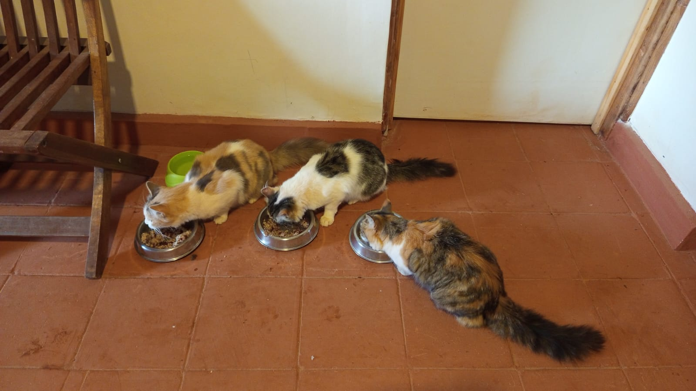

Mucheru World of Golf
Field civil and agronomic engineering operations across Mucheru World of Golf on Saturday, 31st October 2026 maintained strong momentum across putting green rootzone preparation, championship teebox platform grading, surface water harvesting, and drainage shaping:
Golf Course Operational Highlights
The farm tractor hauled rich red soil from multiple excavation stockpiles across the property to Teeboxes 12 and 14, where labor crews spread and leveled the soil to shape uniform playing surfaces ready for planting. Agronomic crews spread and leveled river sand across the putting green beds of Greens 18, 12, and 16, while clearing rocks and debris outside the green aprons in readiness for spreading surrounding red soil. Surface water inlet channels were active, channeling natural runoff into Dam 2 and Dam 3. Surveyors measured and staked out the platform footprint for the solar panel stand with wooden pegs and string lines. Backfilling of lateral drainage pipe trenches continued across active corridors, and laborers leveled and shaped the invert of the main drainage canal to secure unobstructed gravity water flow.
- River Sand Leveling on Greens 18, 12, and 16: Ground crews utilized rakes, shovels, and wheelbarrows to spread and level river sand across the rootzone sub-bases of Greens 18, 12, and 16.
- Clearing Green Apron Surrounds for Red Soil Spreading: Laborers loaded stones, rocks, and surface debris into wheelbarrows from the ground outside green aprons to prepare clean surrounds for spreading red soil.
- Dam 2 and Dam 3 Water Inlet Inflow: Gravity inflow channels directed runoff into Dam 2 and Dam 3, raising water storage levels within the geomembrane-lined reservoir basins.
- Solar Panel Stand Platform Layout & Measurements: Technicians established layout measurements, driving wooden pegs and stringing guide lines across the open field to mark the foundation footprint for the solar panel mounting frame.
- Teeboxes 12 and 14 Red Soil Haulage & Platform Leveling: The farm tractor and tipper trailer hauled red topsoil to Teeboxes 12 and 14, where workers graded and smoothed the surfaces into finished launch platforms ready for planting.
- Drainage Pipe Trench Backfilling & Compacting: Laborers backfilled excavated drainage pipe trenches with soil and compacted lines across the fairway and green surrounds after verifying pipe alignments.
- Main Drainage Canal Invert Shaping for Gravity Flow: Field crews worked inside the main drainage canal corridor, leveling the trench bed and dressing sidewalls beneath timber crossings to maintain continuous gravity flow.
18-hole putting green status audit showing the latest work completed and current condition for each green as of October 31, 2026:
| Green | Current Technical & Agronomic State | Milestone Status |
|---|---|---|
| Green 1 | Pop-up sprinklers confirmed functional and operational spray coverage verified (Oct 27). | Pop-Ups Functional |
| Green 2 | Pop-up sprinklers operational with pressurized spray coverage actively watering green (Oct 28). | Pop-Ups Functional |
| Green 3 | Electric solenoid valve installed on lateral line; river sand hauled to Green 13 (Oct 26). | Solenoid Installed |
| Green 4 | Pop-up sprinklers confirmed functional and operational spray coverage verified (Oct 27). | Pop-Ups Functional |
| Green 5 | Established mature championship putting green turfgrass watered with pop-up sprinklers (Oct 24). | Turf Irrigated |
| Green 6 | Perimeter drainage trench digging ongoing; tested gravity flow with water and backfilled with pipes (Oct 30). | Drainage Trenching Ongoing |
| Green 7 | HDPE irrigation supply trench cutting through Teebox 6 to Green 7 backfilled and covered (Oct 27). | Pipe Trench Covered |
| Green 8 | Electric solenoid valve installation and lateral pipe fitting completed on green (Oct 26). | Solenoid Installed |
| Green 9 | River sand hauled from stockpiles to Greens 12 and 16 for rootzone layering (Oct 29). | River Sand Hauled |
| Green 10 | River sand application completed across green bed with 2 tipper lorries of sand applied (Oct 29). | River Sand Applied |
| Green 11 | Pop-up sprinklers confirmed functional and operational spray coverage verified (Oct 27). | Pop-Ups Functional |
| Green 12 Today | River sand spread and leveled across putting green rootzone layer over sub-base (Oct 31). | River Sand Leveled |
| Green 13 | Pop-up sprinklers confirmed functional and operational spray coverage verified (Oct 27). | Pop-Ups Functional |
| Green 14 | Saddle clamps installed on HDPE pop-up sprinkler pipes and perimeter trenches backfilled (Oct 23). | Saddle Clamps & Covered |
| Green 15 | Saddle clamps installed on HDPE pop-up sprinkler pipes and perimeter trenches backfilled (Oct 22). | Saddle Clamps & Covered |
| Green 16 Today | River sand spread and leveled across putting green rootzone layer over sub-base (Oct 31). | River Sand Leveled |
| Green 17 | Electric solenoid valve installed on lateral line; HDPE sprinkler trenches backfilled (Oct 24). | Solenoid Installed |
| Green 18 Today | River sand leveled across putting green rootzone bed and apron surrounds cleared (Oct 31). | River Sand Leveled |
18-hole championship teebox status audit tracking launch platform shaping, red soil leveling, and planting readiness as of October 31, 2026:
| Teebox | Current Technical & Earthwork State | Platform Status |
|---|---|---|
| Tee 1 | Irrigation pipe trenches excavated across platform along marked survey lines (Oct 26). | Pipe Trenches Dug |
| Tee 2 | Red soil applied halfway across platform; lateral pipe trenches backfilled (Oct 27). | Red Soil Halfway |
| Tee 3 | Red soil applied, spread, and leveled across platform; lateral pipe trenches covered (Oct 27). | Red Soil Leveled |
| Tee 4 | Irrigation pipe trenches excavated across platform along marked survey lines (Oct 26). | Pipe Trenches Dug |
| Tee 5 | Red soil spread and leveled across platform; lateral pipe trenches backfilled (Oct 27). | Red Soil Leveled |
| Tee 6 | Lateral irrigation pipe and pop-up sprinkler trenches backfilled and leveled (Oct 29). | Sprinkler Trenches Covered |
| Tee 7 | Red soil hauled by tractor, spread, and leveled; platform prepared and ready for planting (Oct 30). | Ready for Planting |
| Tee 8 | Lateral irrigation pipe and pop-up sprinkler trenches backfilled and leveled (Oct 29). | Sprinkler Trenches Covered |
| Tee 9 | Surplus red soil hauled to Teebox 7 for platform shaping and surface leveling (Oct 29). | Red Soil Hauled |
| Tee 10 | Irrigation pipe trenches excavated across platform along marked survey lines (Oct 26). | Pipe Trenches Dug |
| Tee 11 | Electric solenoid valve installed on lateral irrigation supply line (Oct 27). | Solenoid Installed |
| Tee 12 Today | Red soil hauled by tractor, spread, and leveled across platform; prepared for planting (Oct 31). | Ready for Planting |
| Tee 13 | Electric solenoid valve installed on lateral irrigation supply line (Oct 27). | Solenoid Installed |
| Tee 14 Today | Red soil hauled by tractor, spread, and leveled across platform; prepared for planting (Oct 31). | Ready for Planting |
| Tee 15 | Irrigation pipe trenches excavated across platform along marked survey lines (Oct 26). | Pipe Trenches Dug |
| Tee 16 | Red soil applied, spread, and leveled; lateral irrigation pipe trenches excavated (Oct 26). | Red Soil & Trenches Dug |
| Tee 17 | Irrigation pipe trenches excavated across platform along marked survey lines (Oct 26). | Pipe Trenches Dug |
| Tee 18 | Irrigation pipe trenches excavated across platform along marked survey lines (Oct 26). | Pipe Trenches Dug |
Operations Agronomy & Engineering Synthesis
Course Agronomy & Earthwork Milestones: River sand leveled across Greens 18, 12, and 16 rootzone beds; debris cleared outside green aprons for upcoming red soil distribution; red soil hauled by the farm tractor and leveled across Teeboxes 12 and 14, making both platforms ready for grass planting.
Hydraulic & Drainage Infrastructure: Inflows into Dam 2 and Dam 3 actively raising water levels; foundation footprint measured for the solar panel stand; pipe trenches backfilled; main drainage canal shaped and leveled to maintain uninterrupted gravity water flow.
Field video recording documenting Saturday, 31st October 2026 operations at Mucheru World of Golf:
Field video recording capturing daily course civil earthworks, river sand spreading, dam water inlets, and drainage infrastructure progress at Mucheru World of Golf on Saturday, 31st October 2026.
Sequential photographic field documentation showing river sand leveling, green apron clearing, water inlets for Dams 2 and 3, solar platform layout, tractor red soil haulage, teebox grading, and drainage works:

Green 18 — Aerial View of River Sand Leveling
Elevated drone perspective of Green 18 showing the kidney bean shape with the river sand putting bed and red soil apron being leveled by ground crew.

Green 18 — River Sand Bed Surface Grading
Ground crew utilizing landscape rakes to smooth and level the river sand rootzone layer across Green 18, framed by surrounding red soil and acacia trees.

Green 16 — River Sand Distribution & Leveling
Field crew using a wheelbarrow, shovel, and rake to spread and grade the golden river sand layer over the green sub-base bordered by the red soil apron.

Green Apron Preparation — Surface Debris Clearance
Laborers loading hardcore rocks and unwanted surface materials into wheelbarrows outside the green apron to clear the ground for spreading red topsoil.

Dam 2 — Water Inflow into Lined Reservoir Basin
Aerial view of the heart-shaped lined Dam 2 basin showing surface water flowing in via the inlet channel and collecting over the geomembrane liner.

Dam 3 — Ongoing Water Inflow & Reservoir Filling
Ground perspective looking down the length of Dam 3 showing calm green water filling the reservoir basin over the installed black geomembrane liner.

Dam 3 — Water Storage Level Overview
Elevated aerial overview of Dam 3 tracking water storage volume along the contoured reservoir corridor adjoining adjacent course playing areas.

Solar Infrastructure — Platform Layout Measurements
Wooden survey pegs and tensioned string lines set out in the field marking foundation measurements and boundaries for the upcoming solar panel stand platform.

Material Haulage — Tractor Delivering Red Soil to Teeboxes
Farm tractor and tipper trailer delivering red soil hauled from stockpiles across the site, with laborers shoveling soil onto Teeboxes 12 and 14.

Teebox Construction — Red Soil Spreading & Shaping
Laborers shoveling red soil from staging heaps and moving material by wheelbarrow to establish the uniform finished grade across the teebox platform.

Teebox 12 — Leveled Red Soil Platform Ready for Planting
Aerial drone photograph of Teebox 12 showing the red soil layer evenly spread and leveled along the perimeter fence line, prepared for grass planting.

Teebox 14 — Finished Red Soil Platform Grading
Aerial view of Teebox 14 displaying smooth, uniform red soil grading across the rectangular tee platform bordered by the boundary fence and earth berms.

Drainage Network — Pipe Trench Backfilling
Workers using shovels to backfill and cover excavated drainage trenches containing installed pipes, with a green rootzone bed visible in the background.

Drainage Infrastructure — Completed Trench Backfill Overview
Aerial drone perspective displaying backfilled drainage trench corridors alongside an adjoining green complex and sand staging area.

Main Drainage Trench — Invert Shaping for Gravity Flow
Laborer standing inside the deep drainage trench corridor using a shovel to level and grade the base invert, ensuring unobstructed gravity water discharge.

Drainage Canal — Excavation & Grading Under Timber Crossing
Perspective along the main drainage canal corridor from a rustic timber log crossing, showing site crew shaping trench walls and base contours.
Chaka Farms
Farm, livestock, canine health, and estate maintenance operations at Chaka Farms on Saturday, 31st October 2026 maintained strict quantitative dairy reconciliation, veterinary health administration, and compound groundskeeping:
Farm Operational Highlights
Dairy production achieved an 8.0 Litres gross harvest (5.0L morning + 3.0L evening), fully accounted for by 7.0 Litres dispatched for commercial sales (4.0L morning + 3.0L evening) and 1.0 Litre in internal farm allocations (0.5L staff allocation to Gladys and 0.5L to Maasai) with zero discrepancy. In livestock care, a visiting veterinarian examined and treated goat kids and a calf sick from tonsils. Willy oversaw morning kennel cleaning, "paw" command conditioning, and morning off-leash pack walking; dog washing was suspended due to cold weather. Bravecto chewable tablets were administered against ticks, fleas, and mites to Zara, Coby, Bella, and Logan (Mali was not given). Ken oversaw lawn trimming on the compound and island, Margaret and Monica raked and bagged trimmed grass, and Kinoti serviced the farm tractor.
- 100% Reconciled Dairy Harvest in Litres: Morning and evening milking yielded 8.0 Litres gross harvest, fully accounted for by 7.0 Litres commercial sales and 1.0 Litre in routine internal farm allocations (Gladys 0.5L, Maasai 0.5L) with zero variance.
- Commercial Milk Dispatches: Commercial sales absorbed 4.0 Litres from morning milking and 3.0 Litres from the evening session, balancing the commercial ledger with 7.0 Litres total dispatched.
- Veterinary Treatment for Tonsil Calf & Goat Kids: A visiting veterinarian attended the farm to examine and administer treatment to a calf suffering from tonsils as well as young goat kids.
- Canine Health & Bravecto Parasite Prevention: Bravecto chewable tablets (1000 mg Fluralaner) were administered to Zara, Coby, Bella, and Logan for 12-week protection against ticks, fleas, and mites (Mali was not given).
- Kennel Hygiene & Off-Leash Farm Walking: Willy oversaw kennel cleaning and "paw" command compliance; dogs completed a morning off-leash walk; routine dog washing was suspended due to cold weather.
- Compound Groundskeeping & Tractor Servicing: Ken oversaw lawn trimming across the compound and island, Margaret and Monica raked grass into sacks, and Kinoti completed maintenance on the farm tractor.
Official milking production and distribution reconciliation for Saturday, 31st October 2026, accounting for all commercial sales and on-farm allocations:
| Category / Transaction | Morning Session | Evening Session | Daily Total |
|---|---|---|---|
| Gross Milk Harvested | 5.0 Litres | 3.0 Litres | 8.0 Litres |
| Commercial Milk Sales (Dispatched) | 4.0 Litres | 3.0 Litres | 7.0 Litres |
| Internal Farm Allocation — Gladys (Staff) | 0.5 Litres | 0.0 Litres | 0.5 Litres |
| Internal Farm Allocation — Maasai | 0.5 Litres | 0.0 Litres | 0.5 Litres |
| Internal Farm Allocation — Goat Kids | 0.0 Litres | 0.0 Litres | 0.0 Litres |
| Total Volume Accounted For | 5.0 Litres | 3.0 Litres | 8.0 Litres (100% Reconciled) |
Dairy Accounting & Farm Reconciliation Note
Total gross milk harvested of 8.0 Litres (5.0L morning + 3.0L evening) is 100% accounted for by 7.0 Litres dispatched for commercial sales (4.0L morning sale + 3.0L evening sale) and 1.0 Litre in routine internal farm allocations (0.5L staff allocation to Gladys and 0.5L to Maasai). In accordance with reporting rules, milk volumes are recorded strictly in Litres (never kilograms), and Maasai is designated strictly as Maasai with zero discrepancy. All yields reconcile perfectly with zero variance.
Daily behavioral conditioning routines, health protocols, veterinary care, and estate compound groundskeeping conducted on Saturday, 31st October 2026:
- Kennel Stall Cleaning & Hygiene Standards: Willy oversaw thorough morning kennel washing, stall sanitation, and food bowl cleaning, preserving clean living quarters for the canine pack.
- Paw Command Obedience Conditioning: Handlers conducted structured obedience drills reinforcing the "paw" command with handler verbal praise and positive reinforcement.
- Morning Off-Leash Farm Pack Walking: Handlers completed an off-leash pack exercise session across the open farm grounds during the morning hours, promoting canine physical fitness and socialization.
- Weather-Adjusted Grooming Protocol: Regular canine bathing was suspended today due to cold weather conditions to protect dogs from chills.
- Bravecto Preventative Parasite Tablets: Chewable Bravecto tablets (1000 mg Fluralaner) protecting against ticks, fleas, and mites for 12 weeks were administered to Zara, Coby, Bella, and Logan (Mali was not given).
- Compound Lawn & Island Grass Trimming: Ken oversaw grounds staff operating mechanical string trimmers to cut overgrown lawn grass across the main compound and island.
- Trimmed Grass Raking & Bagging: Margaret and Monica systematically raked cut grass across the lawns and loaded the cuttings into large sacks for removal.
Field video recording documenting Saturday, 31st October 2026 canine behavioral conditioning routines and kennel manners under Willy:
Structured kennel manners conditioning under Willy, verifying dogs demonstrating patience, calm stall manners, and prompt obedience to doorway release commands.
Sequential photographic field documentation showing canine ectoparasite prevention medication, compound lawn trimming, and grounds maintenance:

Canine Healthcare — Bravecto Parasite Prevention Tablets
Four packs of Bravecto chewable tablets (1000 mg Fluralaner) laid out for administration to Zara, Coby, Bella, and Logan for 12-week protection against ticks, fleas, and mites.
.jpeg)
Compound Upkeep — Main Compound Lawn Trimming
Groundskeeper trimming the expansive green lawn under mature acacia trees with a brush cutter, leaving a neat, manicured surface across the main farm compound.

Island Grounds — Trimmed Lawn Along Driveway Curve
Neatly trimmed grass berm along the curved gravel access driveway bordering tall wetland reeds outside the central island area.

Estate Maintenance — Island Perimeter Lawn Contours
Cleanly trimmed grass slope bordering the brick-edged gravel estate driveway, showing fresh lawn cuttings following mechanical mowing.

Grounds Maintenance — Margaret & Monica Raking Grass
Margaret and Monica in green uniform dustcoats using spring rakes to gather cut lawn grass on the slope for collection into disposal sacks.
Kabete Residence
Estate waste clearance, continuous concrete curing, water filtration automation, electrical socket installation, and domestic pet care at Kabete Residence on Saturday, 31st October 2026 maintained clean grounds and operational infrastructure:
Residence Operational Highlights
Compound maintenance prioritized extensive site waste clearance across multiple zones. Laborers cleared waste materials at the SQ slab and packed debris into sacks, cleared fallen leaves and discarded items behind the clothes hanging lines, collected discarded paint containers, and cleaned waste along the steps and stone retaining walls. The front face at the SQ and cold room was cleaned, leaving tools and wheelbarrows neatly stored. Continuous 21-day curing of the SQ fireplace shutter concrete slab progressed with surface water ponding maintained. In plumbing and electrical infrastructure, technicians installed a new wall power socket near the filter system, removed the manual multi-port head from the blue water filter cylinder, installed a digital automatic transmission control head valve, and linked pump controls. Domestic pet care included Ajabu the Golden Retriever enjoying his morning leashed walk along the driveway and lawns followed by evening mealtime, while resident cats Reo, Mocha, and Aiko enjoyed evening dinner together indoors.
- Waste Materials Clearance at SQ Concrete Slab: Workers cleared leftover timber, stone fragments, and construction debris from the SQ slab surface and packed waste into burlap sacks.
- Waste Clearance Behind Clothes Hanging Lines: Grounds crew raked dry eucalyptus leaves, gathered discarded plastics and containers, and cleared waste behind the outdoor hanging lines.
- Discarded Paint Container Clearance & Sorting: Crews sorted and cleared old paint tins, plastic drums, and empty solvent pails accumulated during previous painting works.
- SQ & Cold Room Front Face Sanitation: The paved walkway leading between the SQ building and cold room was thoroughly swept and cleaned, with wheelbarrows and poles neatly aligned.
- Ongoing 21-Day Concrete Curing of SQ Fireplace Slab: The cast concrete shutter slab at the SQ fireplace was kept continuously moist with ponded water to support the 21-day curing process.
- New Electrical Power Socket Installation for Water Filter: Electricians mounted and wired a new white wall socket adjacent to the water filtration pipes to power the automatic filter head valve.
- Automatic Transmission Control Head Valve Installation: Plumbers replaced the manual multi-port valve head with a new digital automatic control head on the blue pressure cylinder under the water tank tower.
- Domestic Pet Care — Ajabu Morning Walk & Evening Pet Dinners: Ajabu completed his morning leashed walk along the driveway and garden lawns followed by evening dinner; resident cats Reo, Mocha, and Aiko dined peacefully together indoors.
Sequential photographic field documentation showing electrical socket installation, water filter head replacement, SQ slab curing, comprehensive waste clearance, tool storage, and domestic pet care:

Electrical Infrastructure — Power Socket Near Filter
Newly installed electrical wall socket wired on the wall beside the vertical PVC piping and blue filter pressure vessel to power the automatic valve unit.

Water Systems — Automatic Pump Controller Setup
Blue water booster pump fitted with an automatic pump control switch unit, green PPR pipe manifolds, and electrical wall connections in the pump shelter.

Filter Upgrade — Manual Multi-Port Head Removed
Black manual multi-port control head with chrome lever handle removed from the filtration vessel to make way for the new automated electronic unit.

Water Treatment — Digital Automatic Valve Head Unit
Technician holding the digital automatic control head valve with LCD status display and brass union coupling prior to mounting onto the blue filter cylinder.

Equipment Positioning — Filter Cylinder Placement
Technician aligning the tall blue composite filter cylinder on its base beneath the steel structural columns of the elevated water tank tower.

Plumbing Installation — Mounting Automatic Filter Head
Technician standing on the plinth to install and tighten the digital automatic control head valve on top of the blue water treatment cylinder.

Concrete Curing — SQ Slab 21-Day Hydration
View down the access stairs showing the cast concrete slab at the SQ fireplace undergoing continuous curing beneath the surrounding mature canopy.
.jpeg)
Hydration Maintenance — SQ Slab Surface Water Ponding
Close-up view of the SQ fireplace concrete slab surface with water ponding maintained to facilitate full hydraulic curing and structural hardening.

Site Clearance — Bagging Construction Waste on SQ Slab
Workers gathering construction debris, timber offcuts, and stone rubble on the SQ slab, packing the materials into sacks for disposal.

Estate Cleanliness — Sweeping Waste at Hanging Lines
Worker sweeping dry leaves and gathering discarded cans, plastic containers, and debris into collection piles on the paved veranda near the hanging lines.

Compound Maintenance — Waste Clearance Behind Hanging Lines
Maintenance crew clearing accumulated leaves, discarded boards, and scrap materials from the service area behind the clothes hanging lines.

Service Area Cleanup — Clearing Racks & Paved Floor
Workers clearing debris from storage racks, sweeping the stone-tiled floor, and bagging leaves and waste behind the hanging lines.

Waste Disposal — Filled Waste Sacks & Sorted Cans
Large sack filled with gathered leaves and sorted empty paint containers staged on the stone pavement for safe disposal from the premises.

Material Disposal — Clearance of Discarded Paint Tins
Discarded paint tins, plastic buckets, and scrap PVC offcuts sorted and loaded into collection sacks along the compound boundary.

Slope Sanitation — Clearing Debris Along Stone Wall
Workers wearing high-visibility reflective vests using shovels and sacks to clear accumulated waste and leaves along the outdoor steps by the stone retaining wall.

Building Frontage — Cleaned SQ & Cold Room Walkway
Cleaned stone-paved walkway leading between the SQ building and cold room entrance, with a wheelbarrow and wooden poles neatly stored along the wall.

Tool Organization — Equipment Storage Rack
Neatly organized exterior storage shelving unit displaying gardening sprayers, leaf blower attachments, brush cutter parts, and estate tools following compound cleaning.

Domestic Pet Care — Ajabu Morning Driveway Walk
Ajabu the Golden Retriever on a patterned leash enjoying his morning outdoor exercise walk along the estate interlocking block driveway.

Pet Wellbeing — Ajabu Outdoor Walk on Paved Path
Ajabu walking happily along the paved estate pathway near the wooded garden border during his daily morning exercise routine.

Domestic Pet Care — Ajabu Indoor Evening Meal
Ajabu eating his nourishing evening dinner indoors from a yellow dish on the terracotta-tiled floor, maintaining consistent daily care.

Domestic Pet Care — Reo, Mocha & Aiko Evening Dinner
Resident cats Reo, Mocha, and Aiko dining peacefully together from stainless steel bowls on the tiled floor in their evening meal routine.